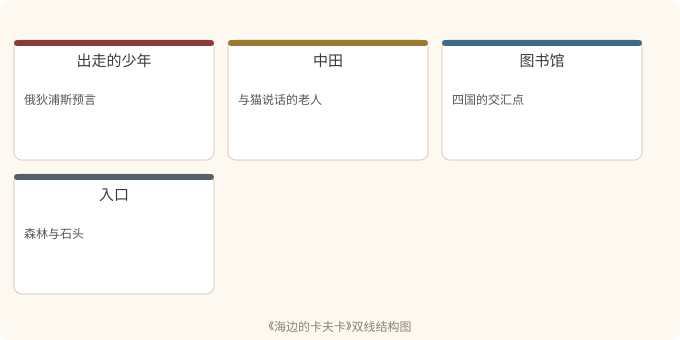

海边的卡夫卡
一、基本信息
| 作者 | 村上春树 |
|---|---|
| 成书/出版 | 2002年出版（通说待核；作者页 B169 口径——major_works 载'海边的卡夫卡'） Haruki Murakami — Encyclopaedia Britannica（百科全书） |
| 国别/地区 | 日本 |
| 时代 | 现当代 · 21世纪 |
| 体裁 | 长篇小说 |
| 语言 | 日语 |

《海边的卡夫卡》双线结构图（主题·结构图）
二、创作背景
作者页（B169）：村上 major_works 载'奇鸟行状录（1994—95）、海边的卡夫卡'——本作为其代表作谱系之一。
Britannica（B169，作者页核对记录）：村上'known for…… blending the fantastic with the mundane'（奇幻与日常的混合——见 nuoweide 条核对）。
三、内容脉络
十五岁少年'田村卡夫卡'离家出走；老人中田与猫说话（通说）。
两条线在四国交汇——入口的森林与石头（通说待核）。
四、主要人物表
| 人物 | 身份 | 说明 |
|---|---|---|
| 田村卡夫卡 | 十五岁少年 | 弑父娶母的俄狄浦斯预言（通说待核） |
| 中田 | 老人 | 与猫交谈（通说待核） |
| 大岛 | 图书管理员 | 向导（通说待核） |
五、主题与艺术特点
- 俄狄浦斯母题的日本变奏（通说）。
- 创伤与'入口'的形而上（通说）。
- 音乐与文学的互文（通说）。
六、影响与评论
- 作者页：村上代表作谱系之一（B169 作者页口径）。
Haruki Murakami — Encyclopaedia Britannica（百科全书） - 国际声誉：英译后长期居于美国畅销榜（通说待核）。
Haruki Murakami — Encyclopaedia Britannica（百科全书）
七、阅读建议
难点
- 超现实设定的阅读态度。
- 希腊悲剧互文。
- 《海边的卡夫卡》（上海译文出版社，通说待核）。
先《挪威的森林》再本作。
八、待核实
- 2002年出版（新潮社说）核对。
- 中译本（林少华/赖明珠两系）核对。
- 俄狄浦斯互文的评论待核。
本页主要来源
村上春树的其他收录作品：挪威的森林